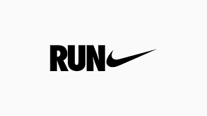

Nike
Nike is known for its innovative running shoes and apparel, providing comfort and style to runners worldwide.
Hoka
Hoka offers maximalist running shoes with extra cushioning, ideal for runners seeking a comfortable and smooth ride.
Brooks
Brooks specializes in running shoes catering to various needs, emphasizing support, stability, and performance.
Asics
Asics is renowned for its high-quality running shoes, providing advanced technology for optimal performance and comfort.
Adidas
Adidas offers a wide range of running gear, combining style and functionality to enhance your running experience.